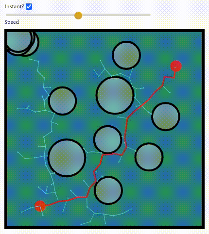

Path Planning By Rapidly Exploring Random Trees
Table of Contents
In my last blog post, I demonstrated the A* path planning algorithm. In this blog post, we're going to go through a sampling based approach called Rapidly Exploring Random Trees (RRT).

Figure 1: Demo
Overview
Given a desired end position and starting position, RRT allows us to find a path connecting those two points. We start by randomly sampling a point on the plane. From there, we find the node in our tree which is closest to our sampled node. (At first, this is just the starting point). Then, having found that node, we move from it a short distance in the direction of the sampled node, until we either run into an obstacle or reach a maximum branch length. There, we'll place a child node. As you can see in the above demonstration, this has the effect of drawing out our tree to cover the space. We keep doing this until we are able to place a node within a certain threshold of distance to our desired destination.
Canvas
We're going to implement the following interface which allows us to render the above demo of RRT in a given HTML container.
14: document.addEventListener("DOMContentLoaded", () => { 15: let width = window.innerWidth > 450 ? 400 : window.innerWidth - 50; 16: CanvasRRT({ 17: canvas_container: document.querySelector('#grid-container'), 18: width: window.innerWidth > 450 ? 400 : window.innerWidth - 75, 19: height: 400, 20: objects: [ 21: new Circle({ center: { x: 10, y: 391 }, radius: 10, border_color: "#d63230", border_width: 0}), 22: new Circle({ center: { x: width - 40, y: 10 }, radius: 10, border_color: "#d63230", border_width: 0}), 23: new Circle({ center: { x: 294, y: 150 }, radius: 40, border_color: "black", fill_color: "#79a5a5"}), 24: new Circle({ center: { x: 164, y: 269 }, radius: 40, border_color: "black", fill_color: "#79a5a5"}), 25: new Circle({ center: { x: 179, y: 152 }, radius: 30, border_color: "black", fill_color: "#79a5a5", }), 26: new Circle({ center: { x: 69, y: 80 }, radius: 30, border_color: "black", fill_color: "#79a5a5", }), 27: new Circle({ center: { x: 138, y: 67 }, radius: 30, border_color: "black", fill_color: "#79a5a5", }), 28: new Circle({ center: { x: 217, y: 92 }, radius: 30, border_color: "black", fill_color: "#79a5a5", }), 29: new Circle({ center: { x: 306, y: 64 }, radius: 30, border_color: "black", fill_color: "#79a5a5", }), 30: new Circle({ center: { x: 261, y: 231 }, radius: 30, border_color: "black", fill_color: "#79a5a5", }), 31: new Circle({ center: { x: 340, y: 241 }, radius: 30, border_color: "black", fill_color: "#79a5a5", }), 32: new Circle({ center: { x: 310, y: 365 }, radius: 30, border_color: "black", fill_color: "#79a5a5", }), 33: new Circle({ center: { x: 248, y: 310 }, radius: 30, border_color: "black", fill_color: "#79a5a5", }), 34: new Circle({ center: { x: 66, y: 160 }, radius: 30, border_color: "black", fill_color: "#79a5a5", }), 35: new Circle({ center: { x: 65, y: 249 }, radius: 30, border_color: "black", fill_color: "#79a5a5", }), 36: new Circle({ center: { x: 97, y: 323 }, radius: 30, border_color: "black", fill_color: "#79a5a5", }), 37: new Circle({ center: { x: 183, y: 343 }, radius: 30, border_color: "black", fill_color: "#79a5a5", }), 38: new Circle({ center: { x: 125, y: 195 }, radius: 30, border_color: "black", fill_color: "#79a5a5", }), 39: new Circle({ center: { x: 325, y: 322 }, radius: 30, border_color: "black", fill_color: "#79a5a5", }), 40: ], 41: speed_slider: document.querySelector('input#speed'), 42: instant_checkbox: document.getElementById('instant'), 43: }); 44: });
We specified the DOM elements for our container and speed slider, as well as the dimensions of the canvas and the obstacles we'd like to populate our canvas with, which are all circles in this example.
48: class Circle { 49: constructor({ center, radius, border_color, border_width=4, fill_color=border_color }) { 50: this.center = center; 51: this.radius = radius; 52: this.border_color = border_color; 53: this.fill_color = fill_color; 54: this.border_width = border_width; 55: } 56: 57: within(x, y) { 58: return distance({ x, y }, this.center) <= this.radius; 59: } 60: } 61: 62: function distance(a, b) { 63: return Math.sqrt(Math.pow(b.y - a.y, 2) + Math.pow(b.x - a.x, 2)); 64: }
First, we're going to set up our HTML canvases. The second canvas acts as a top layer for placing temporary drawings. This way, when we animate the algorithm, we can erase the sampled points by clearing layer2.
89: async function CanvasRRT ({ canvas_container, width, height, objects, speed_slider, instant_checkbox }) { 90: let canvas = document.createElement('canvas'); 91: canvas.style.border = "6px solid black"; 92: canvas.style.touchAction = 'none'; // Prevent scroll on touch screen devices. 93: canvas.width = width; 94: canvas.height = height; 95: canvas.style.position = "absolute"; 96: canvas.style.left = 0; 97: canvas.style.top = 0; 98: canvas.style.zIndex = 0; 99: 100: let layer2 = document.createElement('canvas'); 101: layer2.style.border = "6px solid black"; 102: layer2.style.touchAction = 'none'; // Prevent scroll on touch screen devices. 103: layer2.width = width; 104: layer2.height = height; 105: layer2.style.position = "absolute"; 106: layer2.style.left = 0; 107: layer2.style.top = 0; 108: layer2.style.zIndex = 1; 109: 110: canvas_container.appendChild(canvas); 111: canvas_container.appendChild(layer2); 112: let cx = canvas.getContext("2d"); 113: let cx2 = layer2.getContext("2d");
The cx (and cx2) object is what we will manipulate to draw on our canvas.
Event Handling
Next up, we're going to need a way to respond to user events.
366: layer2.addEventListener('mousedown', press_handler, true); 367: layer2.addEventListener('pointerdown', press_handler, true); 368: layer2.addEventListener('mousemove', move_handler, true); 369: layer2.addEventListener('pointermove', move_handler, true); 370: window.addEventListener('mouseup', unclick_handler, true); 371: window.addEventListener('pointerup', unclick_handler, true);
We want the canvas to be continuously re-rendered if the use is dragging an object, and we want to recalculate the path from A to B whenever the user clicks or finishes dragging an object. We'll also update the cursor depending on the context.
136: let object_grabbed_idx = -1; 137: let object_hovered_idx = -1; 138: let clicked_on = false; 139: 140: const press_handler = e => { 141: e.stopPropagation(); 142: e.preventDefault(); 143: clicked_on = true; 144: object_grabbed_idx = objects.reduce((res, object, current_idx) => { 145: return object.within(e.offsetX, e.offsetY) ? current_idx : res; 146: }, -1); // -1 indicates no object grabbed 147: 148: object_hovered_idx = object_grabbed_idx; 149: if (object_grabbed_idx != -1) { 150: layer2.style.cursor = "grabbing"; 151: } 152: }; 153: 154: const move_handler = e => { 155: e.stopPropagation(); 156: e.preventDefault(); 157: 158: if (object_grabbed_idx == -1) { 159: object_hovered_idx = objects.reduce((res, object, current_idx) => { 160: return object.within(e.offsetX, e.offsetY) ? current_idx : res; 161: }, -1); // -1 indicates no object hovered over 162: if (object_hovered_idx == -1) { 163: layer2.style.cursor = "crosshair" 164: } else { 165: layer2.style.cursor = "grab" 166: } 167: 168: return; 169: } 170: 171: let x = e.offsetX; 172: let y = e.offsetY; 173: if (x < 0 || y < 0 || x >= canvas.width || y >= canvas.height) { 174: return; 175: } 176: 177: objects[object_grabbed_idx].center = { x, y }; 178: render_grid(); 179: };
The path should be recalculated when the user releases the mouse/trackpad/etc…. The path planning, especially when animated, may take some time, and while that is happening, we don't want the page to become unresponsive. Since JavaScript is single threaded, we have to interweave the execution of our path planning code asynchronously. For that, we're going to use the Promise API1.
332: let RRT_promise; 333: 334: const unclick_handler = e => { 335: if (!clicked_on) { // the user may be unclicking off 336: return; // the canvas after clicking and 337: } // dragging on the canvas 338: 339: if (RRT_promise) { 340: RRT_promise.cancel(); 341: } 342: 343: render_grid(); 344: object_grabbed_idx = -1; 345: layer2.style.cursor = object_hovered_idx == -1 ? "crosshair" : "grab"; 346: 347: RRT_promise = RRT(); 348: RRT_promise.then(err => { 349: if (err == 0) { 350: cx.strokeStyle = "#d63230"; 351: cx.lineWidth = 3; 352: cx.lineJoin = "round"; 353: cx.beginPath(); 354: cx.moveTo(path[0].x, path[0].y); 355: path.forEach(node => { 356: cx.lineTo(node.x, node.y); 357: }); 358: cx.stroke(); 359: } 360: }); 361: 362: clicked_on = false; 363: };
Following a successful path planning, we'll draw the path on the canvas.
Here's the code used to render the grid whenever we reset it.
115: const render_grid = () => { 116: // draw canvas background 117: cx.fillStyle = BACKGROUND_COLOR; // blue green 118: cx.fillRect(0, 0, width, height); 119: 120: // draw objects 121: objects.forEach(object => { 122: cx.beginPath(); 123: // center=(x,y) radius=r angle=0 to 7 124: cx.arc(object.center.x, object.center.y, object.radius - object.border_width / 2, 0, 7); 125: cx.fillStyle = object.fill_color; 126: cx.fill(); 127: 128: cx.lineWidth = object.border_width; 129: cx.strokeStyle = object.border_color; 130: cx.stroke(); 131: 132: cx.closePath(); 133: }); 134: }
At this point, we're ready to dive into the algorithm.
Path Planning
We begin by sampling a random spot from the grid.
181: let path; 182: const RRT = () => { 183: return new Promise(async (resolve, reject, onCancel) => { 184: const MAX_BRANCH_LENGTH = 20; 185: const PROXIMITY_THRESHOLD = 10; 186: const MAX_ITERATIONS = 5000; 187: 188: let path_nodes = [new PathNode(objects[0].center.x, objects[0].center.y)]; 189: 190: let iterations = 0; 191: let unfulfilled_promise = true; 192: onCancel(function() { 193: unfulfilled_promise = false; 194: }); 195: while (iterations <= MAX_ITERATIONS && unfulfilled_promise) { 196: // randomly sample a point, (xs, ys) 197: let [xs, ys] = [Math.random() * canvas.width, Math.random() * canvas.height]; 198: 199: if (!instant_checkbox.checked && unfulfilled_promise) { 200: // display sample spot 201: let sample_circle = new Circle({ center: {x: xs, y: ys}, radius: 3, fill: true, border_color: "red"}); 202: cx2.beginPath(); 203: // center=(x,y) radius=r angle=0 to 7 204: cx2.arc(sample_circle.center.x, sample_circle.center.y, sample_circle.radius, 0, 7); 205: cx2.fillStyle = sample_circle.fill_color; 206: cx2.fill(); 207: cx2.closePath(); 208: } 209: 210: // Find the nearest node in the tree 211: let nearest_node = path_nodes.reduce((nearest, node) => { 212: return distance(node, { x: xs, y: ys }) < distance(nearest, { x: xs, y: ys }) ? node : nearest; 213: });
If the user sets the speed to anything less than 100%, we also draw the point on the second layer of our canvas. Then we then we need to find the nearest node in the tree.
Dealing With Obstacles
We now turn our attention to the task of deciding where to place our new node. We're going to put it in the direction of the sampled point, from our nearest_node. But we don't want to go very far at any given time. And we also don't want to place it within an obstacle, but we can go right up to the edge of an obstacle. We'll need a way to travel in the direction of the sampled point from our nearest_node. But we also need to be able to determine whether and where that line intersects with an obstacle.
A line through points \(P\) and \(Q\) can be described parametrically as
\begin{align*} \vec{r}(t) & = \vec{r_0} + t \frac{\vec{PQ}}{\|\vec{PQ}\|}, \end{align*}where \(\vec{r_0}\) is the vector pointing to point \(P\), from the origin. Notice the \(\|\vec{PQ}\|\) in the denominator makes \(\frac{\vec{PQ}}{\|\vec{PQ}\|}\) a unit vector, which means that \(\vec{r}(t)\) is parameterized by the length of the line. This will come in handy. Let \(\vec{u}\) be the unit vector \(\frac{\vec{PQ}}{\|\vec{PQ}\|}\).
\begin{align*} \vec{r}(t) & = \vec{r_0} + t\vec{u} \\ & = \langle x_0, y_0 \rangle + t \langle u_x, u_y \rangle \\ & = \langle u_xt + x_0, u_yt + y_0 \rangle \end{align*}216: const dx = xs - nearest_node.x; 217: const dy = ys - nearest_node.y; 218: const magnitude = Math.sqrt(dx**2 + dy**2); 219: const ux = dx / magnitude; 220: const uy = dy / magnitude; 221: // r(t) is the vector equation of a line through the nearest node and the sampled point 222: // ⎛x ⎞ ⎛u ⎞ 223: // ⎜ 0⎟ ⎜ x⎟ 224: // r(t) = ⎜ ⎟ + t ⎜ ⎟ 225: // ⎜y ⎟ ⎜u ⎟ 226: // ⎝ 0⎠ ⎝ y⎠ 227: 228: const r = t => { 229: return [ ux * t + nearest_node.x, uy * t + nearest_node.y ]; 230: };
All of our obstacles are circles, and given the radius \(r_c\) and center of the circle \((C_x,C_y)\), we can write an equation for the circle in \(\mathbb{R}^2\): \[(x - C_x)^2 + (y-C_y)^2 = r_c^2.\]
We need to find out if there is a point on the line that satisfies our equation for any of our circles, within a certain range of our parameter \(t\), which corresponds to the distance we want to travel from our existing node.
We can do this by substituting the \(\hat{x}\) and \(\hat{y}\) components of \(\vec{r}\) into the equation of each circle, and then solving for \(t\). If there are any real solutions, then our line cuts through the circle, and we know where. \[\left(u_xt + x_{0} - C_{x} \right)^{2} + \left(u_yt + y_{0} - C_{y}\right)^{2} = r_{c}^{2}\] Solving this equation by hand would get a little messy, but a few lines of python make short work of it.
from sympy import symbols, expand, factor, latex, solve x0, ux, t, cx, y0, uy, cy, rc = symbols('x_0 u_x t C_x y_0 u_y C_y r_c') expr = (ux*t + x0 - cx)**2 + (uy*t + y0 - cy)**2 - rc**2 solutions = solve(expr, t) for solution in solutions: print("$$" + latex(solution) + "$$")
\[\frac{C_{x} u_{x} + C_{y} u_{y} - u_{x} x_{0} - u_{y} y_{0} - \sqrt{- C_{x}^{2} u_{y}^{2} + 2 C_{x} C_{y} u_{x} u_{y} - 2 C_{x} u_{x} u_{y} y_{0} + 2 C_{x} u_{y}^{2} x_{0} - C_{y}^{2} u_{x}^{2} + 2 C_{y} u_{x}^{2} y_{0} - 2 C_{y} u_{x} u_{y} x_{0} + r_{c}^{2} u_{x}^{2} + r_{c}^{2} u_{y}^{2} - u_{x}^{2} y_{0}^{2} + 2 u_{x} u_{y} x_{0} y_{0} - u_{y}^{2} x_{0}^{2}}}{u_{x}^{2} + u_{y}^{2}}\] \[\frac{C_{x} u_{x} + C_{y} u_{y} - u_{x} x_{0} - u_{y} y_{0} + \sqrt{- C_{x}^{2} u_{y}^{2} + 2 C_{x} C_{y} u_{x} u_{y} - 2 C_{x} u_{x} u_{y} y_{0} + 2 C_{x} u_{y}^{2} x_{0} - C_{y}^{2} u_{x}^{2} + 2 C_{y} u_{x}^{2} y_{0} - 2 C_{y} u_{x} u_{y} x_{0} + r_{c}^{2} u_{x}^{2} + r_{c}^{2} u_{y}^{2} - u_{x}^{2} y_{0}^{2} + 2 u_{x} u_{y} x_{0} y_{0} - u_{y}^{2} x_{0}^{2}}}{u_{x}^{2} + u_{y}^{2}}\]
This may look messy, but all of these values are known constants. We're looking for \(t\) values at points of intersection. First we are interested in whether the part under the radical is less than 0, because that would imply there is no solution, and that we can safely ignore the possibility of running into an obstacle.
232: let ts = []; // t values at intersections between r(t) and the circles 233: if (unfulfilled_promise) { 234: objects.slice(2).forEach(circle => { 235: const cx = circle.center.x; 236: const cy = circle.center.y; 237: const x0 = nearest_node.x; 238: const y0 = nearest_node.y; 239: const rc = circle.radius; 240: const under_root = -(cx**2) * uy**2 + 2 * cx * cy * ux * uy - 2 * cx * ux * uy * y0 + 2 * cx * uy**2 * x0 - cy**2 * ux**2 + 2 * cy * ux**2 * y0 - 2 * cy * ux * uy * x0 + ux**2 * rc**2 + rc**2 * uy**2 - ux**2 * y0**2 + 2 * ux * uy * x0 * y0 - uy**2 * x0**2; 241: if (under_root < 0) { 242: return; // no intersection 243: }
Next, we're going to evaluate and collect the solutions. We're only interested in solutions greater than 0 and less than the maximum distance we want to travel.
245: // now we need to know if it has a solution on a range of t 246: let a = cx * ux + cy * uy - ux * x0 - uy * y0; 247: let denom = ux**2 + uy**2; 248: let t1 = (a - Math.sqrt(under_root)) / denom; 249: let t2 = (a + Math.sqrt(under_root)) / denom; 250: let tsi = [t1, t2]; 251: tsi.forEach(t => { 252: if (t > 0 && t < MAX_BRANCH_LENGTH) { 253: ts.push(t); 254: } 255: }); 256: }); 257: }
The \(t\) value we're going to use to place our actual node will be the minimum among the MAX_BRANCH_LENGTH, any solutions we found, and the distance between the nearest node and the sample node. To avoid errors associated with floating point numbers, we'll double check that the a node at this point won't lie within an obstacle, and we'll add the node to our path.
259: let tn = Math.min(...ts, MAX_BRANCH_LENGTH, distance(nearest_node, { x: xs, y: ys })) - 0.2; 260: 261: if (objects.slice(2).every(circle => !circle.within(...r(tn)))) { 262: const new_node = new PathNode(...r(tn), nearest_node); 263: path_nodes.push(new_node);
We'll also animate the branch joining the node. and draw the node on the canvas.
265: if (!instant_checkbox.checked) { 266: const n_waypoints = 2**(10-speed_slider.value); 267: const waypoints = calc_waypoints(nearest_node, new_node, n_waypoints); 268: for (let t = 1; t < waypoints.length; t++) { 269: const a = waypoints[t-1]; 270: const b = waypoints[t]; 271: 272: await sleep(0); 273: 274: requestAnimationFrame(_ => { 275: if (unfulfilled_promise) { 276: cx.strokeStyle = TREE_COLOR; 277: cx.lineWidth = 1.2; 278: cx.beginPath(); 279: cx.moveTo(a.x, a.y); 280: cx.lineTo(b.x, b.y); 281: cx.stroke(); 282: cx.closePath(); 283: } 284: }); 285: } 286: } else { 287: if (unfulfilled_promise) { 288: cx.strokeStyle = TREE_COLOR; 289: cx.lineWidth = 1.2; 290: cx.beginPath(); 291: cx.moveTo(nearest_node.x, nearest_node.y); 292: cx.lineTo(new_node.x, new_node.y); 293: cx.stroke(); 294: cx.closePath(); 295: } 296: } 297: let node_circle = new Circle({ center: new_node, radius: 1.2, fill: true, border_color: NODE_COLOR}); 298: if (unfulfilled_promise) { 299: cx.beginPath(); 300: // center=(x,y) radius=r angle=0 to 7 301: cx.arc(node_circle.center.x, node_circle.center.y, node_circle.radius, 0, 7); 302: cx.fillStyle = node_circle.fill_color; 303: cx.fill(); 304: cx.closePath(); 305: }
Finally we need to check and see if the new node is close enough to are target destination. Otherwise, we'll continue searching.
305: if (distance(new_node, objects[1].center) < PROXIMITY_THRESHOLD && unfulfilled_promise) { 306: let node = new_node; 307: path = []; 308: while (node instanceof PathNode) { 309: path.push(node); 310: node = node.parent; 311: } 312: resolve(0); 313: unfulfilled_promise = false; 314: } 315: } 316: 317: // delete sample circle 318: cx2.clearRect(0, 0, layer2.width, layer2.height); 319: 320: iterations += 1; 321: } 322:
Source Code
Below is the whole thing put together.
0: Promise.config({ 1: // Enable warnings 2: // warnings: true, 3: // Enable long stack traces 4: // longStackTraces: true, 5: // Enable cancellation 6: cancellation: true, 7: // Enable monitoring 8: // monitoring: true, 9: // Enable async hooks 10: // asyncHooks: true, 11: }); 12: 13: document.addEventListener("DOMContentLoaded", () => { 14: let width = window.innerWidth > 450 ? 400 : window.innerWidth - 50; 15: CanvasRRT({ 16: canvas_container: document.querySelector('#grid-container'), 17: width: window.innerWidth > 450 ? 400 : window.innerWidth - 75, 18: height: 400, 19: objects: [ 20: new Circle({ center: { x: 10, y: 391 }, radius: 10, border_color: "#d63230", border_width: 0}), 21: new Circle({ center: { x: width - 40, y: 10 }, radius: 10, border_color: "#d63230", border_width: 0}), 22: new Circle({ center: { x: 294, y: 150 }, radius: 40, border_color: "black", fill_color: "#79a5a5"}), 23: new Circle({ center: { x: 164, y: 269 }, radius: 40, border_color: "black", fill_color: "#79a5a5"}), 24: new Circle({ center: { x: 179, y: 152 }, radius: 30, border_color: "black", fill_color: "#79a5a5", }), 25: new Circle({ center: { x: 69, y: 80 }, radius: 30, border_color: "black", fill_color: "#79a5a5", }), 26: new Circle({ center: { x: 138, y: 67 }, radius: 30, border_color: "black", fill_color: "#79a5a5", }), 27: new Circle({ center: { x: 217, y: 92 }, radius: 30, border_color: "black", fill_color: "#79a5a5", }), 28: new Circle({ center: { x: 306, y: 64 }, radius: 30, border_color: "black", fill_color: "#79a5a5", }), 29: new Circle({ center: { x: 261, y: 231 }, radius: 30, border_color: "black", fill_color: "#79a5a5", }), 30: new Circle({ center: { x: 340, y: 241 }, radius: 30, border_color: "black", fill_color: "#79a5a5", }), 31: new Circle({ center: { x: 310, y: 365 }, radius: 30, border_color: "black", fill_color: "#79a5a5", }), 32: new Circle({ center: { x: 248, y: 310 }, radius: 30, border_color: "black", fill_color: "#79a5a5", }), 33: new Circle({ center: { x: 66, y: 160 }, radius: 30, border_color: "black", fill_color: "#79a5a5", }), 34: new Circle({ center: { x: 65, y: 249 }, radius: 30, border_color: "black", fill_color: "#79a5a5", }), 35: new Circle({ center: { x: 97, y: 323 }, radius: 30, border_color: "black", fill_color: "#79a5a5", }), 36: new Circle({ center: { x: 183, y: 343 }, radius: 30, border_color: "black", fill_color: "#79a5a5", }), 37: new Circle({ center: { x: 125, y: 195 }, radius: 30, border_color: "black", fill_color: "#79a5a5", }), 38: new Circle({ center: { x: 325, y: 322 }, radius: 30, border_color: "black", fill_color: "#79a5a5", }), 39: ], 40: speed_slider: document.querySelector('input#speed'), 41: instant_checkbox: document.getElementById('instant'), 42: }); 43: }); 44: 45: const BACKGROUND_COLOR = "#008b8b"; 46: const NODE_COLOR = "#5fcbcb"; // #E7E438 47: const TREE_COLOR = "#5fcbcb"; // #fac50e 48: 49: class Circle { 50: constructor({ center, radius, border_color, border_width=4, fill_color=border_color }) { 51: this.center = center; 52: this.radius = radius; 53: this.border_color = border_color; 54: this.fill_color = fill_color; 55: this.border_width = border_width; 56: } 57: 58: within(x, y) { 59: return distance({ x, y }, this.center) <= this.radius; 60: } 61: } 62: 63: function distance(a, b) { 64: return Math.sqrt(Math.pow(b.y - a.y, 2) + Math.pow(b.x - a.x, 2)); 65: } 66: 67: class PathNode { 68: constructor(x, y, parent = null) { 69: this.x = x; 70: this.y = y; 71: this.parent = parent; 72: } 73: } 74: 75: function calc_waypoints(a, b, n) { 76: let waypoints = []; 77: let dx = b.x - a.x; 78: let dy = b.y - a.y; 79: 80: for (let j = 0; j < n; j++) { 81: let x = a.x + dx * j / n; 82: let y = a.y + dy * j / n; 83: waypoints.push({ x, y }); 84: } 85: return waypoints; 86: } 87: 88: const sleep = async ms => new Promise(r => setTimeout(r, ms)); 89: 90: async function CanvasRRT ({ canvas_container, width, height, objects, speed_slider, instant_checkbox }) { 91: let canvas = document.createElement('canvas'); 92: canvas.style.border = "6px solid black"; 93: canvas.style.touchAction = 'none'; // Prevent scroll on touch screen devices. 94: canvas.width = width; 95: canvas.height = height; 96: canvas.style.position = "absolute"; 97: canvas.style.left = 0; 98: canvas.style.top = 0; 99: canvas.style.zIndex = 0; 100: 101: let layer2 = document.createElement('canvas'); 102: layer2.style.border = "6px solid black"; 103: layer2.style.touchAction = 'none'; // Prevent scroll on touch screen devices. 104: layer2.width = width; 105: layer2.height = height; 106: layer2.style.position = "absolute"; 107: layer2.style.left = 0; 108: layer2.style.top = 0; 109: layer2.style.zIndex = 1; 110: 111: canvas_container.appendChild(canvas); 112: canvas_container.appendChild(layer2); 113: let cx = canvas.getContext("2d"); 114: let cx2 = layer2.getContext("2d"); 115: 116: const render_grid = () => { 117: // draw canvas background 118: cx.fillStyle = BACKGROUND_COLOR; // blue green 119: cx.fillRect(0, 0, width, height); 120: 121: // draw objects 122: objects.forEach(object => { 123: cx.beginPath(); 124: // center=(x,y) radius=r angle=0 to 7 125: cx.arc(object.center.x, object.center.y, object.radius - object.border_width / 2, 0, 7); 126: cx.fillStyle = object.fill_color; 127: cx.fill(); 128: 129: cx.lineWidth = object.border_width; 130: cx.strokeStyle = object.border_color; 131: cx.stroke(); 132: 133: cx.closePath(); 134: }); 135: } 136: 137: let object_grabbed_idx = -1; 138: let object_hovered_idx = -1; 139: let clicked_on = false; 140: 141: const press_handler = e => { 142: e.stopPropagation(); 143: e.preventDefault(); 144: clicked_on = true; 145: object_grabbed_idx = objects.reduce((res, object, current_idx) => { 146: return object.within(e.offsetX, e.offsetY) ? current_idx : res; 147: }, -1); // -1 indicates no object grabbed 148: 149: object_hovered_idx = object_grabbed_idx; 150: if (object_grabbed_idx != -1) { 151: layer2.style.cursor = "grabbing"; 152: } 153: }; 154: 155: const move_handler = e => { 156: e.stopPropagation(); 157: e.preventDefault(); 158: 159: if (object_grabbed_idx == -1) { 160: object_hovered_idx = objects.reduce((res, object, current_idx) => { 161: return object.within(e.offsetX, e.offsetY) ? current_idx : res; 162: }, -1); // -1 indicates no object hovered over 163: if (object_hovered_idx == -1) { 164: layer2.style.cursor = "crosshair" 165: } else { 166: layer2.style.cursor = "grab" 167: } 168: 169: return; 170: } 171: 172: let x = e.offsetX; 173: let y = e.offsetY; 174: if (x < 0 || y < 0 || x >= canvas.width || y >= canvas.height) { 175: return; 176: } 177: 178: objects[object_grabbed_idx].center = { x, y }; 179: render_grid(); 180: }; 181: 182: let path; 183: const RRT = () => { 184: return new Promise(async (resolve, reject, onCancel) => { 185: const MAX_BRANCH_LENGTH = 20; 186: const PROXIMITY_THRESHOLD = 10; 187: const MAX_ITERATIONS = 5000; 188: 189: let path_nodes = [new PathNode(objects[0].center.x, objects[0].center.y)]; 190: 191: let iterations = 0; 192: let unfulfilled_promise = true; 193: onCancel(function() { 194: unfulfilled_promise = false; 195: }); 196: while (iterations <= MAX_ITERATIONS && unfulfilled_promise) { 197: // randomly sample a point, (xs, ys) 198: let [xs, ys] = [Math.random() * canvas.width, Math.random() * canvas.height]; 199: 200: if (!instant_checkbox.checked && unfulfilled_promise) { 201: // display sample spot 202: let sample_circle = new Circle({ center: {x: xs, y: ys}, radius: 3, fill: true, border_color: "red"}); 203: cx2.beginPath(); 204: // center=(x,y) radius=r angle=0 to 7 205: cx2.arc(sample_circle.center.x, sample_circle.center.y, sample_circle.radius, 0, 7); 206: cx2.fillStyle = sample_circle.fill_color; 207: cx2.fill(); 208: cx2.closePath(); 209: } 210: 211: // Find the nearest node in the tree 212: let nearest_node = path_nodes.reduce((nearest, node) => { 213: return distance(node, { x: xs, y: ys }) < distance(nearest, { x: xs, y: ys }) ? node : nearest; 214: }); 215: const dx = xs - nearest_node.x; 216: const dy = ys - nearest_node.y; 217: const magnitude = Math.sqrt(dx**2 + dy**2); 218: const ux = dx / magnitude; 219: const uy = dy / magnitude; 220: // r(t) is the vector equation of a line through the nearest node and the sampled point 221: // ⎛x ⎞ ⎛u ⎞ 222: // ⎜ 0⎟ ⎜ x⎟ 223: // r(t) = ⎜ ⎟ + t ⎜ ⎟ 224: // ⎜y ⎟ ⎜u ⎟ 225: // ⎝ 0⎠ ⎝ y⎠ 226: 227: const r = t => { 228: return [ ux * t + nearest_node.x, uy * t + nearest_node.y ]; 229: }; 230: 231: let ts = []; // t values at intersections between r(t) and the circles 232: if (unfulfilled_promise) { 233: objects.slice(2).forEach(circle => { 234: const cx = circle.center.x; 235: const cy = circle.center.y; 236: const x0 = nearest_node.x; 237: const y0 = nearest_node.y; 238: const rc = circle.radius; 239: const under_root = -(cx**2) * uy**2 + 2 * cx * cy * ux * uy - 2 * cx * ux * uy * y0 + 2 * cx * uy**2 * x0 - cy**2 * ux**2 + 2 * cy * ux**2 * y0 - 2 * cy * ux * uy * x0 + ux**2 * rc**2 + rc**2 * uy**2 - ux**2 * y0**2 + 2 * ux * uy * x0 * y0 - uy**2 * x0**2; 240: if (under_root < 0) { 241: return; // no intersection 242: } 243: 244: // now we need to know if it has a solution on a range of t 245: let a = cx * ux + cy * uy - ux * x0 - uy * y0; 246: let denom = ux**2 + uy**2; 247: let t1 = (a - Math.sqrt(under_root)) / denom; 248: let t2 = (a + Math.sqrt(under_root)) / denom; 249: let tsi = [t1, t2]; 250: tsi.forEach(t => { 251: if (t > 0 && t < MAX_BRANCH_LENGTH) { 252: ts.push(t); 253: } 254: }); 255: }); 256: } 257: 258: let tn = Math.min(...ts, MAX_BRANCH_LENGTH, distance(nearest_node, { x: xs, y: ys })) - 0.2; 259: 260: if (objects.slice(2).every(circle => !circle.within(...r(tn)))) { 261: const new_node = new PathNode(...r(tn), nearest_node); 262: path_nodes.push(new_node); 263: 264: if (!instant_checkbox.checked) { 265: const n_waypoints = 2**(10-speed_slider.value); 266: const waypoints = calc_waypoints(nearest_node, new_node, n_waypoints); 267: for (let t = 1; t < waypoints.length; t++) { 268: const a = waypoints[t-1]; 269: const b = waypoints[t]; 270: 271: await sleep(0); 272: 273: requestAnimationFrame(_ => { 274: if (unfulfilled_promise) { 275: cx.strokeStyle = TREE_COLOR; 276: cx.lineWidth = 1.2; 277: cx.beginPath(); 278: cx.moveTo(a.x, a.y); 279: cx.lineTo(b.x, b.y); 280: cx.stroke(); 281: cx.closePath(); 282: } 283: }); 284: } 285: } else { 286: if (unfulfilled_promise) { 287: cx.strokeStyle = TREE_COLOR; 288: cx.lineWidth = 1.2; 289: cx.beginPath(); 290: cx.moveTo(nearest_node.x, nearest_node.y); 291: cx.lineTo(new_node.x, new_node.y); 292: cx.stroke(); 293: cx.closePath(); 294: } 295: } 296: let node_circle = new Circle({ center: new_node, radius: 1.2, fill: true, border_color: NODE_COLOR}); 297: if (unfulfilled_promise) { 298: cx.beginPath(); 299: // center=(x,y) radius=r angle=0 to 7 300: cx.arc(node_circle.center.x, node_circle.center.y, node_circle.radius, 0, 7); 301: cx.fillStyle = node_circle.fill_color; 302: cx.fill(); 303: cx.closePath(); 304: } 305: 306: if (distance(new_node, objects[1].center) < PROXIMITY_THRESHOLD && unfulfilled_promise) { 307: let node = new_node; 308: path = []; 309: while (node instanceof PathNode) { 310: path.push(node); 311: node = node.parent; 312: } 313: resolve(0); 314: unfulfilled_promise = false; 315: } 316: } 317: 318: // delete sample circle 319: cx2.clearRect(0, 0, layer2.width, layer2.height); 320: 321: iterations += 1; 322: } 323: 324: reject(new Error("Iteration limit reached")); 325: unfulfilled_promise = false; 326: }); 327: }; 328: 329: let RRT_promise; 330: 331: const unclick_handler = e => { 332: if (!clicked_on) { // the user may be unclicking off 333: return; // the canvas after clicking and 334: } // dragging on the canvas 335: 336: if (RRT_promise) { 337: RRT_promise.cancel(); 338: } 339: 340: render_grid(); 341: object_grabbed_idx = -1; 342: layer2.style.cursor = object_hovered_idx == -1 ? "crosshair" : "grab"; 343: 344: RRT_promise = RRT(); 345: RRT_promise.then(err => { 346: if (err == 0) { 347: cx.strokeStyle = "#d63230"; 348: cx.lineWidth = 3; 349: cx.lineJoin = "round"; 350: cx.beginPath(); 351: cx.moveTo(path[0].x, path[0].y); 352: path.forEach(node => { 353: cx.lineTo(node.x, node.y); 354: }); 355: cx.stroke(); 356: } 357: }); 358: 359: clicked_on = false; 360: }; 361: 362: layer2.addEventListener('mousedown', press_handler, true); 363: layer2.addEventListener('pointerdown', press_handler, true); 364: layer2.addEventListener('mousemove', move_handler, true); 365: layer2.addEventListener('pointermove', move_handler, true); 366: window.addEventListener('mouseup', unclick_handler, true); 367: window.addEventListener('pointerup', unclick_handler, true); 368: 369: clicked_on = true; 370: unclick_handler(); 371: }
Footnotes:
Annoyingly, JavaScript provides no method for cancelling a Promise. So, I'm using a third party library called bluebird.js.